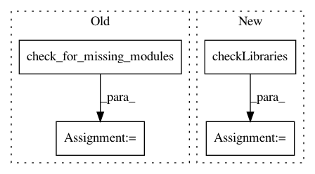

559e68fcac66c449772be2b21af92f502df70e5f,scripts/TestHarness/testers/RavenPython.py,RavenPython,check_runnable,#RavenPython#,108
Before Change
if self.specs["requires_swig2"] and not RavenPython.has_swig2:
self.set_skip("skipped (No swig 2.0 found)")
return False
missing, too_old, _ = RavenUtils.check_for_missing_modules()
if len(missing) > 0:
self.set_fail("skipped (Missing python modules: "+" ".join(missing)+
" PYTHONPATH="+os.environ.get("PYTHONPATH", "")+")")
return False
After Change
if self.specs["requires_swig2"] and not RavenPython.hasSwig2:
self.set_skip("skipped (No swig 2.0 found)")
return False
missing, notQa = library_handler.checkLibraries()
if len(missing) > 0:
self.set_fail("skipped (Missing python modules: "+" ".join(missing)+
" PYTHONPATH="+os.environ.get("PYTHONPATH", "")+")")
return False
In pattern: SUPERPATTERN
Frequency: 3
Non-data size: 4
Instances
Project Name: idaholab/raven
Commit Name: 559e68fcac66c449772be2b21af92f502df70e5f
Time: 2019-11-07
Author: paul.talbot@inl.gov
File Name: scripts/TestHarness/testers/RavenPython.py
Class Name: RavenPython
Method Name: check_runnable
Project Name: idaholab/raven
Commit Name: 559e68fcac66c449772be2b21af92f502df70e5f
Time: 2019-11-07
Author: paul.talbot@inl.gov
File Name: scripts/TestHarness/testers/RavenFramework.py
Class Name:
Method Name:
Project Name: idaholab/raven
Commit Name: 559e68fcac66c449772be2b21af92f502df70e5f
Time: 2019-11-07
Author: paul.talbot@inl.gov
File Name: scripts/TestHarness/testers/RavenErrors.py
Class Name: RavenErrors
Method Name: check_runnable